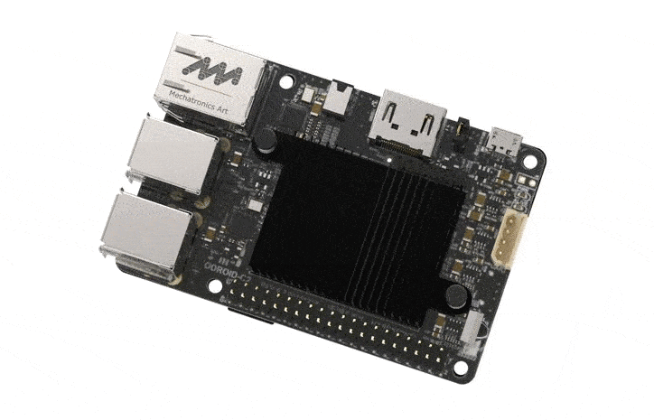
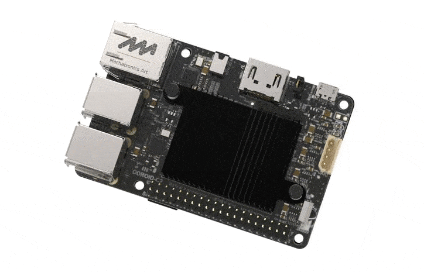
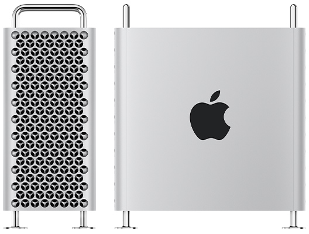
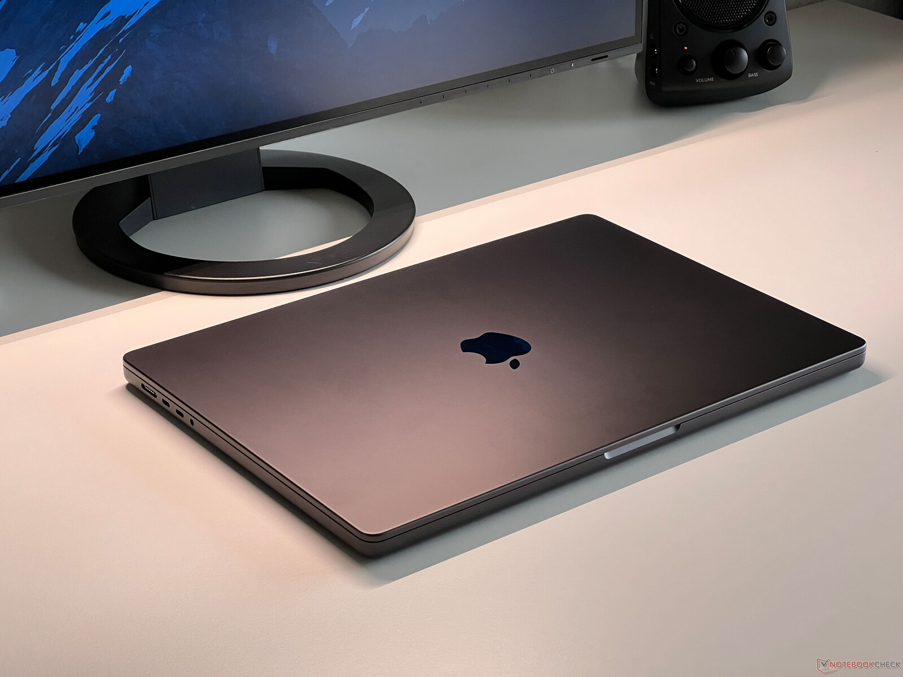

COMPUTADORAS
Estos son algunos de los tipos de computadoras que existen en el mercado actual
Visita este sitio web para que puedas ver más ejemplos de computadoras: Sitio relacionado
Algunos ejemplos de computadoras

 


DETALLES DE LAS COMPUTADORAS
|  | Servidores, ideales para usos profesionales que requieren muchos recursos computacionales |
|  | Una computadora portátil o laptop, es un equipo personal que puede ser transportado fácilmente |
PRODUCTOS
| PRODUCTO | MARCA | TIPO DE COMPUTADORA | PRECIO EN EL MERCADO |
|---|---|---|---|
| Mac Pro (M2 Ultra) | Apple | Estación de trabajo o servidor de alta gama | Desde $6999.99 |
| MacBook Pro 16-in. (M4 Max) | Apple | Laptop | Desde $2499.99 |